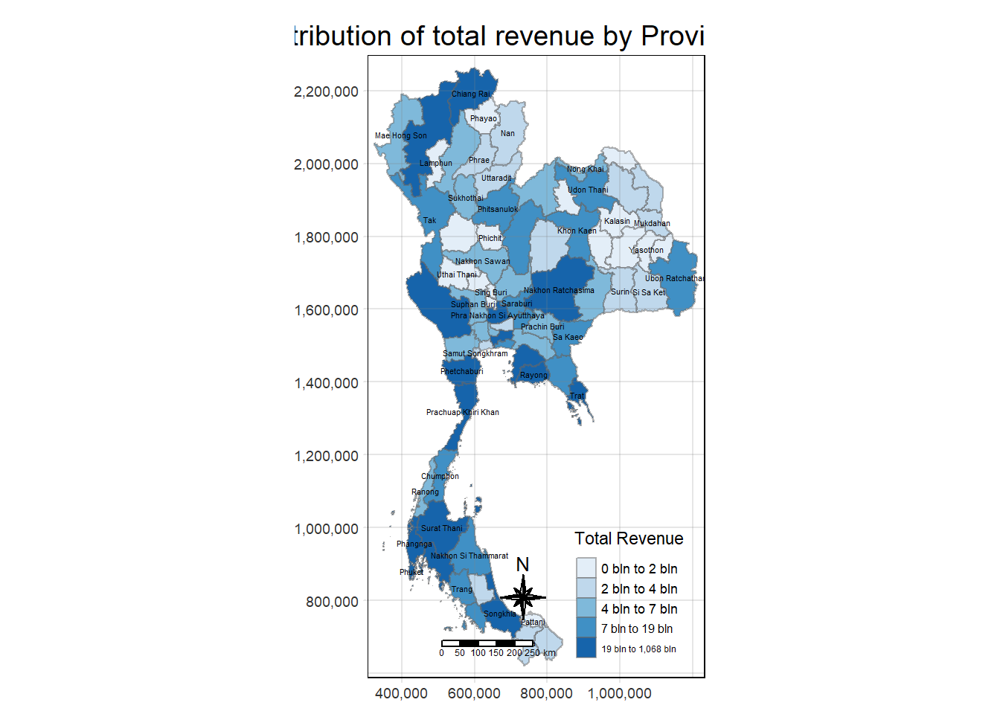
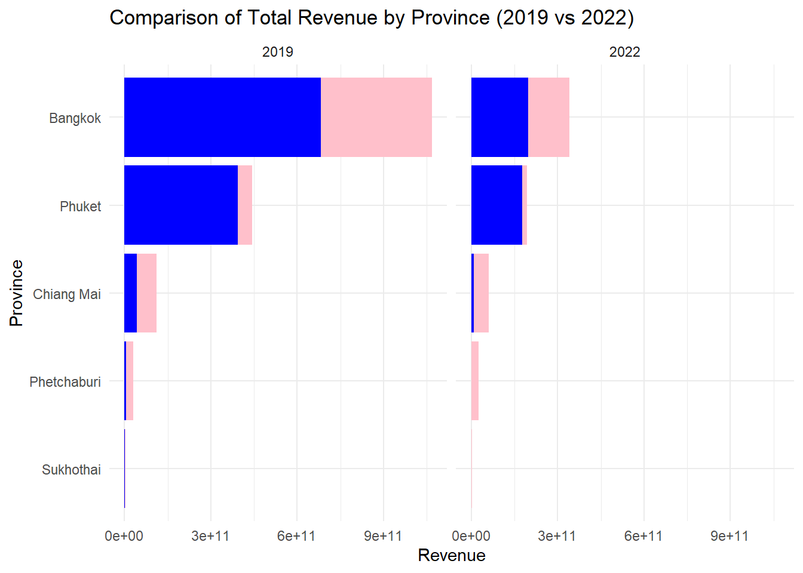
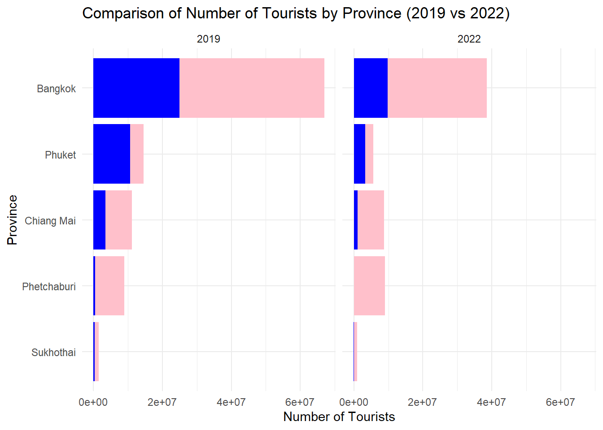
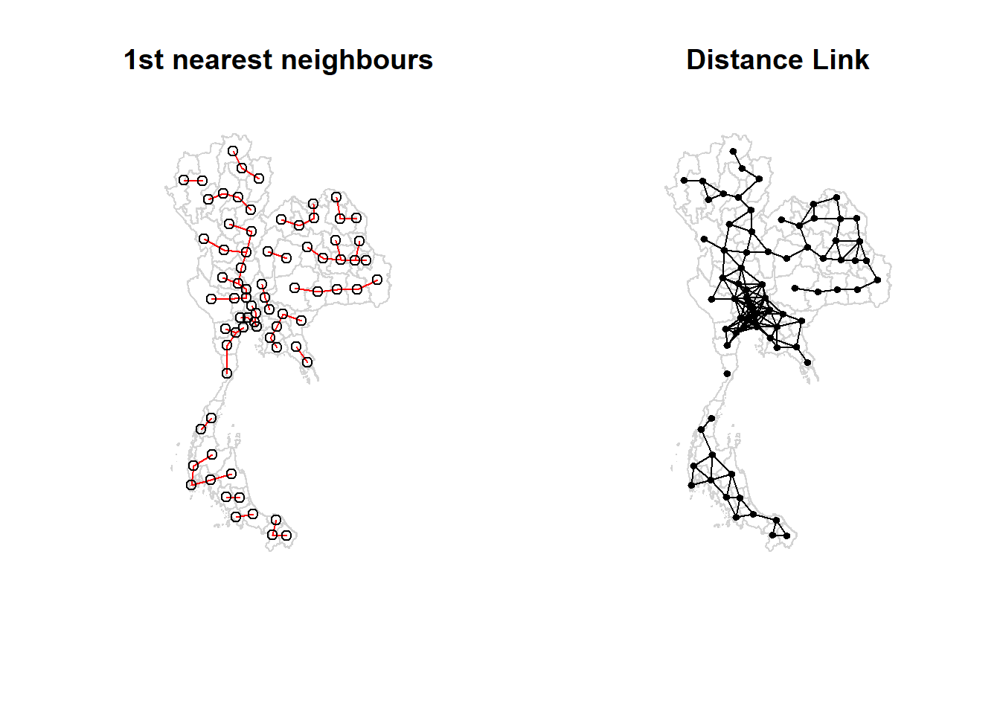
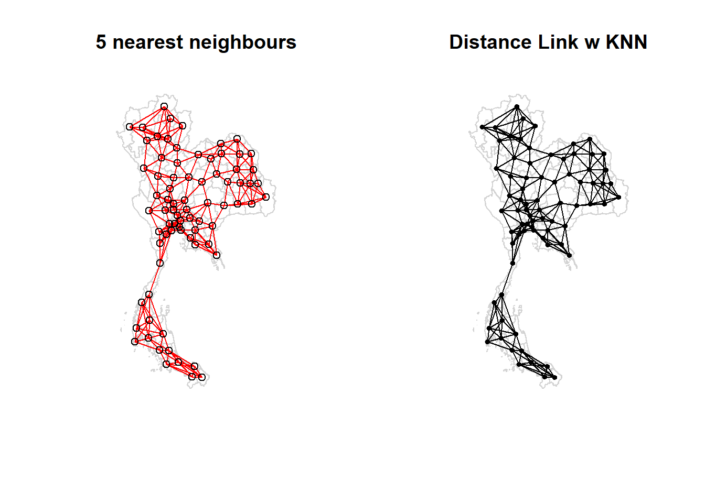
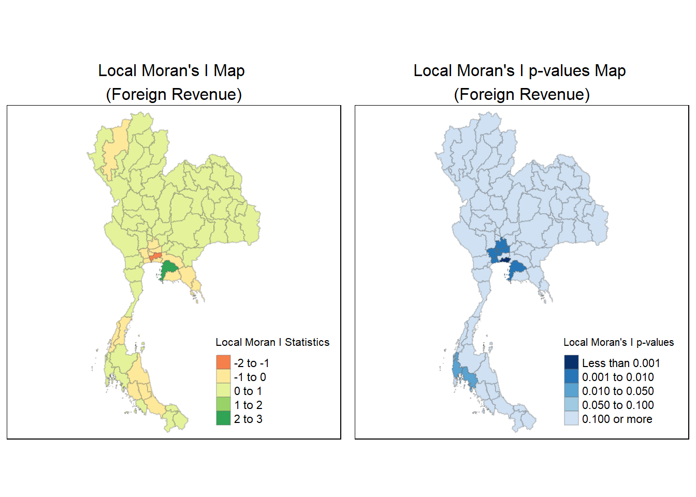
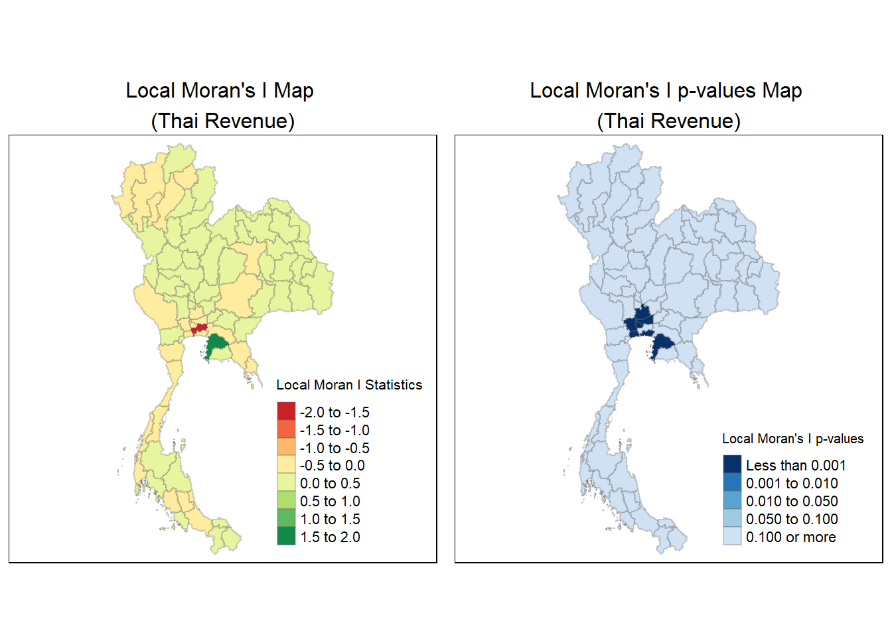

pacman::p_load(sf, sfdep, ggstatsplot, tmap, tidyverse, spdep, patchwork)Take-home Exercise 2: Discovering impacts of COVID-19 on Thailand tourism economy at the province level using spatial and spatio-temporal statistics
1 Overview
Tourism is a major industry in Thailand, contributing around 20% to the country’s gross domestic product (GDP). In 2019, Thailand generated 90 billion US dollars from both domestic and international tourism. However, due to the COVID-19 pandemic, this revenue sharply declined to 24 billion US dollars in 2020.
It’s also important to recognize that Thailand’s tourism economy is not evenly distributed across the country. The tourism economy of Thailand is mainly focused on five provinces, namely Bangkok, Phuket, Chiang Mai, Sukhothai and Phetchaburi.
1.1 Objective
The objective of this exercise is to explore whether key indicators of Thailand’s tourism economy are independent of spatial and spatio-temporal factors. If dependencies exist, we want to identify clusters, outliers, and emerging hot or cold spots. The exercise involves the following tasks:
Create a geospatial data layer of Thailand’s provinces (including Bangkok) as an
sfpolygon layer.Develop a tourism economy indicators layer for the study area, also in
sfpolygon features.Derive a tourism economy indicator layer in a spatio-temporal format (
spacetime s3 class) usingsfdep, maintaining a monthly and yearly time series.Perform global spatial autocorrelation analysis using
sfdepto determine overall spatial dependence.Conduct local spatial autocorrelation analysis to detect specific clusters and outliers.
Carry out an emerging hotspot analysis to identify trends in hot or cold spots over time
Describe the spatial patterns revealed by the analysis above.
2 Getting Started
The code chunk below installs and loads sf, sfdep, ggstatsplot, tmap, tidyverse, spdep, patchwork packages into R environment
3 Data Preparation
For the purpose of this exercise, we will be using two data sets:
Thailand Domestic Tourism Statistics (thaitour)
The dataset contains statistics on domestic tourism in Thailand, by province, from Jan 2019 to Feb 2023. Information includes the number of tourists, the occupancy rate, the profits generated by tourism as well as the nationality of the tourists (Thai vs. foreign).Thailand Subnational Adminstrative Boundaries (province)
The dataset contains Thailand’s administrative level 0 (country), 1 (province), 2 (district), and 3 (sub-district, tambon) boundaries.
3.1 Importing data into R Environment
thaitour <- read_csv ("data/rawdata/thailand_domestic_tourism_2019_2023_ver2.csv")Rows: 30800 Columns: 7
── Column specification ────────────────────────────────────────────────────────
Delimiter: ","
chr (5): province_thai, province_eng, region_thai, region_eng, variable
dbl (1): value
date (1): date
ℹ Use `spec()` to retrieve the full column specification for this data.
ℹ Specify the column types or set `show_col_types = FALSE` to quiet this message.list(thaitour)[[1]]
# A tibble: 30,800 × 7
date province_thai province_eng region_thai region_eng variable value
<date> <chr> <chr> <chr> <chr> <chr> <dbl>
1 2019-01-01 กรุงเทพมหานคร Bangkok ภาคกลาง central ratio_t… 93.4
2 2019-01-01 ลพบุรี Lopburi ภาคกลาง central ratio_t… 61.3
3 2019-01-01 พระนครศรีอยุธยา Phra Nakhon S… ภาคกลาง central ratio_t… 73.4
4 2019-01-01 สระบุรี Saraburi ภาคกลาง central ratio_t… 67.3
5 2019-01-01 ชัยนาท Chainat ภาคกลาง central ratio_t… 79.3
6 2019-01-01 นครปฐม Nakhon Pathom ภาคกลาง central ratio_t… 71.7
7 2019-01-01 สิงห์บุรี Sing Buri ภาคกลาง central ratio_t… 64.6
8 2019-01-01 อ่างทอง Ang Thong ภาคกลาง central ratio_t… 71.2
9 2019-01-01 นนทบุรี Nonthaburi ภาคกลาง central ratio_t… 75.1
10 2019-01-01 ปทุมธานี Pathum Thani ภาคกลาง central ratio_t… 60.8
# ℹ 30,790 more rows💡To check the different attributes in the data set
thaitour %>%
count(variable) %>%
print()# A tibble: 8 × 2
variable n
<chr> <int>
1 no_tourist_all 3850
2 no_tourist_foreign 3850
3 no_tourist_stay 3850
4 no_tourist_thai 3850
5 ratio_tourist_stay 3850
6 revenue_all 3850
7 revenue_foreign 3850
8 revenue_thai 3850💡To check the different provinces in the data set
thaitour %>%
count(province_eng) %>%
print()# A tibble: 77 × 2
province_eng n
<chr> <int>
1 Amnat Charoen 400
2 Ang Thong 400
3 Bangkok 400
4 Bueng Kan 400
5 Buriram 400
6 Chachoengsao 400
7 Chainat 400
8 Chaiyaphum 400
9 Chanthaburi 400
10 Chiang Mai 400
# ℹ 67 more rowsprovince <- st_read(dsn = "data/rawdata", layer = "tha_admbnda_adm1_rtsd_20220121")Reading layer `tha_admbnda_adm1_rtsd_20220121' from data source
`D:\2. SMU - MITB\Term 4\ISSS626 Geospatial\YX-Leng\ISSS626-Geospatial\Take-home_Ex\Take-home_Ex02\data\rawdata'
using driver `ESRI Shapefile'
Simple feature collection with 77 features and 16 fields
Geometry type: MULTIPOLYGON
Dimension: XY
Bounding box: xmin: 97.34336 ymin: 5.613038 xmax: 105.637 ymax: 20.46507
Geodetic CRS: WGS 84st_crs(province) <- 4326
province <- st_transform(province, crs = 32647)
head(province,5)Simple feature collection with 5 features and 16 fields
Geometry type: MULTIPOLYGON
Dimension: XY
Bounding box: xmin: 630867.9 ymin: 1490796 xmax: 712440.5 ymax: 1622722
Projected CRS: WGS 84 / UTM zone 47N
Shape_Leng Shape_Area ADM1_EN ADM1_TH ADM1_PCODE
1 2.417227 0.13133873 Bangkok กรุงเทพมหานคร TH10
2 1.695100 0.07926199 Samut Prakan สมุทรปราการ TH11
3 1.251111 0.05323766 Nonthaburi นนทบุรี TH12
4 1.884945 0.12698345 Pathum Thani ปทุมธานี TH13
5 3.041716 0.21393797 Phra Nakhon Si Ayutthaya พระนครศรีอยุธยา TH14
ADM1_REF ADM1ALT1EN ADM1ALT2EN ADM1ALT1TH ADM1ALT2TH ADM0_EN ADM0_TH
1 <NA> <NA> <NA> <NA> <NA> Thailand ประเทศไทย
2 <NA> <NA> <NA> <NA> <NA> Thailand ประเทศไทย
3 <NA> <NA> <NA> <NA> <NA> Thailand ประเทศไทย
4 <NA> <NA> <NA> <NA> <NA> Thailand ประเทศไทย
5 <NA> <NA> <NA> <NA> <NA> Thailand ประเทศไทย
ADM0_PCODE date validOn validTo geometry
1 TH 2019-02-18 2022-01-22 -001-11-30 MULTIPOLYGON (((674339.8 15...
2 TH 2019-02-18 2022-01-22 -001-11-30 MULTIPOLYGON (((687139.8 15...
3 TH 2019-02-18 2022-01-22 -001-11-30 MULTIPOLYGON (((644817.9 15...
4 TH 2019-02-18 2022-01-22 -001-11-30 MULTIPOLYGON (((704086 1575...
5 TH 2019-02-18 2022-01-22 -001-11-30 MULTIPOLYGON (((662941.6 16...3.2 Data Wrangling
3.2.1 Check for duplicates & drop unwanted columns
To ensure no duplicate rows are presented and only the English columns are selected, the following code chunk is used:
thaitour <- thaitour %>%
distinct() %>%
select(date,province_eng,region_eng,variable,value)3.2.2 Perform Relational Join
Perform a left join of both data sets and select only columns that will be used in analysis:
thai <- left_join(thaitour,province,
by = c("province_eng" = "ADM1_EN"), relationship = "many-to-many") %>%
select(1:7,21)3.2.3 Filter for missing / mismatched values
filter_thai <- thai %>%
filter(is.na(Shape_Area))
filter_thai %>%
distinct(province_eng) %>%
print()# A tibble: 8 × 1
province_eng
<chr>
1 Lopburi
2 Chainat
3 Chonburi
4 Prachinburi
5 Phang Nga
6 Buriram
7 Sisaket
8 Nong Bua Lamphu
Findings
The above code chunk filters for rows with empty Shape_Area and Geometry - this is indicative that there are mismatches between the 2 data sets and the province name are not compatible between the Tourism Statistics and Administrative Boundaries.
The 8 provinces have been misspelled in the Tourism Statistics data set and will need to be corrected before the data sets can be merged correctly.
3.2.4 Correct province names in Tourism Statistics
thaitour_v2 <- thaitour %>%
mutate(province_eng = case_when(
province_eng == "Lopburi" ~ "Lop Buri",
province_eng == "Chainat" ~ "Chai Nat",
province_eng == "Chonburi" ~ "Chon Buri",
province_eng == "Prachinburi" ~ "Prachin Buri",
province_eng == "Phang Nga" ~ "Phangnga",
province_eng == "Buriram" ~ "Buri Ram",
province_eng == "Sisaket" ~ "Si Sa Ket",
province_eng == "Nong Bua Lamphu" ~ "Nong Bua Lam Phu",
TRUE ~ province_eng # Keep all other values unchanged
))3.2.5 Perform Relational Join & check that there are no more mismatched provinces
thai_v2 <- left_join(thaitour_v2,province,
by = c("province_eng" = "ADM1_EN"), relationship = "many-to-many") %>%
select(1:7,21)any(is.na(thai_v2))[1] FALSE3.2.6 Check for values less than zero (errors)
value_neg <- thai_v2 %>%
filter(value < 0)
value_neg# A tibble: 2 × 8
date.x province_eng region_eng variable value Shape_Leng Shape_Area
<date> <chr> <chr> <chr> <dbl> <dbl> <dbl>
1 2021-07-01 Nakhon Pathom central revenue_forei… -4250 2.46 0.179
2 2021-08-01 Nakhon Pathom central revenue_forei… -4250 2.46 0.179
# ℹ 1 more variable: geometry <MULTIPOLYGON [m]>
Findings
The above code chunk filters out 2 records of foreign revenue where the value is negative. For purpose of analysis in this exercise, these 2 records will be corrected to zero as revenue should not be negative.
Final data set will remain with 30,800 observations.
thai_v2 <- thai_v2 %>%
mutate(value = pmax(value, 0))3.2.7 Split out the 8 attributes to unique columns
thai_final <- thai_v2 %>%
pivot_wider(names_from = variable, values_from = value)3.2.8 Split out the date column to Year and Month
thai_final <- thai_final %>%
mutate(
year = year(date.x),
month = month(date.x)
)3.2.9
3.2.10 Save transformed data in rds folder
thai_final <- st_as_sf(thai_final, crs = 32647)
thai_finalSimple feature collection with 3850 features and 15 fields
Geometry type: MULTIPOLYGON
Dimension: XY
Bounding box: xmin: 325178.8 ymin: 620860.6 xmax: 1213656 ymax: 2263241
Projected CRS: WGS 84 / UTM zone 47N
# A tibble: 3,850 × 16
date.x province_eng region_eng Shape_Leng Shape_Area
* <date> <chr> <chr> <dbl> <dbl>
1 2019-01-01 Bangkok central 2.42 0.131
2 2019-01-01 Lop Buri central 5.69 0.546
3 2019-01-01 Phra Nakhon Si Ayutthaya central 3.04 0.214
4 2019-01-01 Saraburi central 4.77 0.292
5 2019-01-01 Chai Nat central 2.90 0.209
6 2019-01-01 Nakhon Pathom central 2.46 0.179
7 2019-01-01 Sing Buri central 1.78 0.0687
8 2019-01-01 Ang Thong central 1.74 0.0792
9 2019-01-01 Nonthaburi central 1.25 0.0532
10 2019-01-01 Pathum Thani central 1.88 0.127
# ℹ 3,840 more rows
# ℹ 11 more variables: geometry <MULTIPOLYGON [m]>, ratio_tourist_stay <dbl>,
# no_tourist_stay <dbl>, no_tourist_all <dbl>, no_tourist_thai <dbl>,
# no_tourist_foreign <dbl>, revenue_all <dbl>, revenue_thai <dbl>,
# revenue_foreign <dbl>, year <dbl>, month <dbl>write_rds(thai_final, "data/rds/thai_final.rds")4 Exploratory Data Analysis (EDA)
In order to study the impact and changes of the Covid-19 pandemic on Thailand’s tourism industry and the changes pre-covid and post-covid, we will be focusing on 2 time periods for the EDA, namely:
Pre-Covid : Year 2019
Post-Covid : Year 2022
The comparison is to show the changes in tourism trends post-covid and highlight any concerns in terms of accommodation occupancy rates as well as foreign travelers to Thailand. To highlight that for ease of analysis, EDA will be focused on the five key provinces, namely Bangkok, Phuket, Chiang Mai, Sukhothai and Phetchaburi.
4.1 Filter data set by year
thai_2019 <- thai_final %>%
filter(year %in% c("2019")) %>%
group_by(province_eng) %>%
summarise(across(c(ratio_tourist_stay/12, no_tourist_stay, no_tourist_all, no_tourist_thai,
no_tourist_foreign, revenue_all, revenue_thai, revenue_foreign),
~sum(.x, na.rm = TRUE))) thai_2022 <- thai_final %>%
filter(year %in% c("2022")) %>%
group_by(province_eng) %>%
summarise(across(c(ratio_tourist_stay/12, no_tourist_stay, no_tourist_all, no_tourist_thai,
no_tourist_foreign, revenue_all, revenue_thai, revenue_foreign),
~sum(.x, na.rm = TRUE))) 4.2 Plot total revenue by Province
tmap_mode("plot")tmap mode set to plottingtm_shape(thai_2019) +
tm_fill("revenue_all",
style = "quantile",
palette = "Blues",
title = "Total Revenue") +
tm_layout(main.title = "Distribution of total revenue by Province",
main.title.position = "center",
main.title.size = 1.2,
legend.height = 0.45,
legend.width = 0.35,
frame = TRUE) +
tm_borders(alpha = 0.5) +
tm_compass(type="8star", size = 2) +
tm_scale_bar() +
tm_grid(alpha =0.2) +
tm_text("province_eng",
size = 0.35,
col = "black",
remove.overlap = TRUE) Legend labels were too wide. The labels have been resized to 0.54, 0.54, 0.54, 0.50, 0.38. Increase legend.width (argument of tm_layout) to make the legend wider and therefore the labels larger.
tmap_mode("plot")tmap mode set to plotting4.3 Comparison between local and foreign revenue
# Combine both data sets into a single data frame
thai_combined <- thai_2019 %>%
mutate(year = "2019") %>%
select(province_eng, revenue_thai, revenue_foreign, year) %>%
bind_rows(thai_2022 %>% mutate(year = "2022") %>% select(province_eng, revenue_thai, revenue_foreign, year)) %>%
filter(province_eng %in% c("Bangkok", "Phuket", "Chiang Mai", "Sukhothai", "Phetchaburi"))
# Create a facet plot
ggplot(thai_combined, aes(x = reorder(province_eng, (revenue_thai + revenue_foreign)), y = (revenue_thai + revenue_foreign))) +
geom_bar(stat = "identity", position = "stack", fill = "pink") +
geom_bar(stat = "identity", position = "stack", aes(y = revenue_foreign), fill = "blue") +
labs(title = "Comparison of Total Revenue by Province (2019 vs 2022)", x = "Province", y = "Revenue") +
theme_minimal() +
coord_flip() +
facet_wrap(~ year)
4.4 Comparison between local and foreign tourists (count)
# Combine both data sets into a single data frame
thai_combined <- thai_2019 %>%
mutate(year = "2019") %>%
select(province_eng, no_tourist_thai, no_tourist_foreign, year) %>%
bind_rows(thai_2022 %>% mutate(year = "2022") %>% select(province_eng, no_tourist_thai, no_tourist_foreign, year)) %>%
filter(province_eng %in% c("Bangkok", "Phuket", "Chiang Mai", "Sukhothai", "Phetchaburi"))
# Create a facet plot
ggplot(thai_combined, aes(x = reorder(province_eng, (no_tourist_thai + no_tourist_foreign)), y = (no_tourist_thai + no_tourist_foreign))) +
geom_bar(stat = "identity", position = "stack", fill = "pink") +
geom_bar(stat = "identity", position = "stack", aes(y = no_tourist_foreign), fill = "blue") +
labs(title = "Comparison of Number of Tourists by Province (2019 vs 2022)", x = "Province", y = "Number of Tourists") +
theme_minimal() +
coord_flip() +
facet_wrap(~ year)
5 Global Spatial Autocorrelation Analysis
Assumption
As geographic boundaries are assumed to remain the same over the years, spatial analysis will use data from Year 2019 only for ease of analysis.
5.1 Spatial Weights Matrix
The spatial weights matrix defines the degree of interaction or influence that one geographic unit has on another based on their spatial relationships. There are two commonly used methods of spatial weights: contiguity-based and distanced-based.
5.1.1 Contiguity-based
Contiguity weights define relationships based on whether geographic units share a boundary. For example, in a grid or map, two areas are considered contiguous if they touch each other. For contiguity-based matrix, it can be further broken down into 2 methods:
Neighbors need to only share a common vertex or edge, which is more encompassing than Rook.
thai_q <- poly2nb(thai_2019,
queen=TRUE)Warning in poly2nb(thai_2019, queen = TRUE): some observations have no neighbours;
if this seems unexpected, try increasing the snap argument.Warning in poly2nb(thai_2019, queen = TRUE): neighbour object has 2 sub-graphs;
if this sub-graph count seems unexpected, try increasing the snap argument.summary(thai_q)Neighbour list object:
Number of regions: 77
Number of nonzero links: 352
Percentage nonzero weights: 5.93692
Average number of links: 4.571429
1 region with no links:
48
2 disjoint connected subgraphs
Link number distribution:
0 1 2 3 4 5 6 7 8 9
1 1 5 17 15 17 10 5 4 2
1 least connected region:
71 with 1 link
2 most connected regions:
17 69 with 9 linksNeighbors need to share a common edge.
thai_r <- poly2nb(thai_2019,
queen=FALSE)Warning in poly2nb(thai_2019, queen = FALSE): some observations have no neighbours;
if this seems unexpected, try increasing the snap argument.Warning in poly2nb(thai_2019, queen = FALSE): neighbour object has 2 sub-graphs;
if this sub-graph count seems unexpected, try increasing the snap argument.summary(thai_r)Neighbour list object:
Number of regions: 77
Number of nonzero links: 352
Percentage nonzero weights: 5.93692
Average number of links: 4.571429
1 region with no links:
48
2 disjoint connected subgraphs
Link number distribution:
0 1 2 3 4 5 6 7 8 9
1 1 5 17 15 17 10 5 4 2
1 least connected region:
71 with 1 link
2 most connected regions:
17 69 with 9 linksBoth Queen and Rook continuity return similar results:
On average, each province is connected to approximately 4.57 other provinces
There is 1 province (region 48) that has no links, meaning it is isolated and probably an island
2 disjoint connected subgraphs suggest that the spatial regions can be divided into 2 distinct groups where the provinces are connected within each group, but there are no connections between the 2 groups. This indicates a fragmented spatial layout.
Since the provinces are sparsely connected, we will look into a distance-based approach to see if it can provide a more nuanced view of the spatial relationships.
5.1.2 Distance-based
On the other hand, distance-based weights identifies neighbors of region points by Euclidean distance with a distance band with lower and upper bounds.
For distance-based matrix, it can be further broken down into fixed or adaptive weight matrix. In order to calculate the distance-based matrix, we will first need to associate each polygon with a point and its coordinates can be derived using the st_centroid() function.
# calculate the centroid
centroid2019 <- st_centroid(thai_2019)Warning: st_centroid assumes attributes are constant over geometriescoords <- st_coordinates(centroid2019)Finding the largest first nearest neighbour distance
k1 <- knn2nb(knearneigh(coords, k = 1))Warning in knn2nb(knearneigh(coords, k = 1)): neighbour object has 19
sub-graphsk1dists <- unlist(nbdists(k1, coords))
summary(k1dists) Min. 1st Qu. Median Mean 3rd Qu. Max.
21548 51966 64530 63281 76823 110987 thai_2019$province_eng[match(max(k1dists), k1dists)][1] "Prachuap Khiri Khan"Computing the fixed distance weight matrix
fixedwm <- dnearneigh(coords,0,110000)Warning in dnearneigh(coords, 0, 110000): neighbour object has 3 sub-graphsfixedwm Neighbour list object:
Number of regions: 77
Number of nonzero links: 344
Percentage nonzero weights: 5.80199
Average number of links: 4.467532
1 region with no links:
50
3 disjoint connected subgraphspar(mfrow = c(1,2))
plot(thai_2019$geometry, border = "lightgrey",main="1st nearest neighbours" )
plot(k1, coords, add = TRUE, col = "red", length = 0.88, )
plot(thai_2019$geometry, border = "lightgrey", main = "Distance Link")
plot(fixedwm, coords, add = TRUE, pch = 19, cex = 0.6)
From the observations of the fixed-distance weight matrix, average number of links remain at approximately 4.5 other provinces. However, provinces have been separated into 3 separate groups and this can be noticed from the charts above where neighbour links are dense in the central area only.
With this uneven distribution of neighbours, we should directly control the numbers of neighbours using k-nearest neighbours in the adaptive-based method.
We will set k = 5 based on the average number of links being approximately 4.5 to 5.
adaptwm <- knn2nb(knearneigh(coords, k=5))
adaptwmNeighbour list object:
Number of regions: 77
Number of nonzero links: 385
Percentage nonzero weights: 6.493506
Average number of links: 5
Non-symmetric neighbours listpar(mfrow = c(1,2))
plot(thai_2019$geometry, border = "lightgrey",main="5 nearest neighbours" )
plot(adaptwm, coords, add = TRUE, col = "red", length = 0.88, )
plot(thai_2019$geometry, border = "lightgrey", main = "Distance Link w KNN")
plot(adaptwm, coords, add = TRUE, pch = 19, cex = 0.6)
5.1.3 Selecting a spatial weight matrix
Selecting a spatial weight matrix is use is dependent on the geographical area of interest and the focus of the study.
Between contiguity-based and distance-based spatial weight matrices, we lean towards distance-based matrices as:
- Based on observations from contiguity-based matrices, provinces are sparsely connected in Thailand.
Within distance-based matrices, we will select adaptive distance-based spatial weight matrix as it allows weights to vary based on local characteristics.
5.1.4 Row-Standardised Weights Matrix
rswm <- nb2listw(adaptwm,
style = "W",
zero.policy = TRUE)
rswmCharacteristics of weights list object:
Neighbour list object:
Number of regions: 77
Number of nonzero links: 385
Percentage nonzero weights: 6.493506
Average number of links: 5
Non-symmetric neighbours list
Weights style: W
Weights constants summary:
n nn S0 S1 S2
W 77 5929 77 26.84 320We will use 2 methods, Moran’s I and Geary’s C to test the following hypothesis:
H0: Observed spatial patterns of values is equally likely as any other spatial pattern i.e. data is randomly disbursed, no spatial pattern
H1: Data is more spatially clustered than expected by chance alone
5.1.5 Moran’s I
Test for foreign revenue:
moran.test(thai_2019$revenue_foreign,
listw = rswm,
zero.policy = TRUE,
na.action = na.omit)
Moran I test under randomisation
data: thai_2019$revenue_foreign
weights: rswm
Moran I statistic standard deviate = 1.1917, p-value = 0.1167
alternative hypothesis: greater
sample estimates:
Moran I statistic Expectation Variance
0.041701033 -0.013157895 0.002119192 Test for local revenue:
moran.test(thai_2019$revenue_thai,
listw = rswm,
zero.policy = TRUE,
na.action = na.omit)
Moran I test under randomisation
data: thai_2019$revenue_thai
weights: rswm
Moran I statistic standard deviate = 0.092824, p-value = 0.463
alternative hypothesis: greater
sample estimates:
Moran I statistic Expectation Variance
-0.0106735491 -0.0131578947 0.0007163151 5.1.6 Geary’s C
set.seed(1234)
gearyforeign = geary.mc(thai_2019$revenue_foreign,
listw = rswm,
nsim = 999)
gearyforeign
Monte-Carlo simulation of Geary C
data: thai_2019$revenue_foreign
weights: rswm
number of simulations + 1: 1000
statistic = 1.0173, observed rank = 575, p-value = 0.575
alternative hypothesis: greaterset.seed(1234)
gearylocal = geary.mc(thai_2019$revenue_thai,
listw = rswm,
nsim = 999)
gearylocal
Monte-Carlo simulation of Geary C
data: thai_2019$revenue_thai
weights: rswm
number of simulations + 1: 1000
statistic = 1.1743, observed rank = 804, p-value = 0.804
alternative hypothesis: greater6 Local spatial autocorrelation analysis
lm_foreign <- localmoran(thai_2019$revenue_foreign, rswm)
head(lm_foreign) Ii E.Ii Var.Ii Z.Ii Pr(z != E(Ii))
1 0.05335205 -0.0007083803 0.01031993 0.5321588 0.5946160
2 0.05006711 -0.0007079398 0.01031351 0.4999736 0.6170937
3 -1.58240527 -0.6807443195 3.16840336 -0.5065508 0.6124700
4 0.05308560 -0.0007094232 0.01033511 0.5291570 0.5966965
5 0.05235692 -0.0006906366 0.01006161 0.5288490 0.5969102
6 -0.06196013 -0.0007063399 0.01029022 -0.6038383 0.5459512thai_2019.lm_foreign <- cbind(thai_2019,lm_foreign) %>%
rename(Pr.Ii = Pr.z....E.Ii..)lm_foreign.map <- tm_shape(thai_2019.lm_foreign) +
tm_fill(col = "Ii",
style = "pretty",
title = "Local Moran I Statistics") +
tm_borders(alpha = 0.3) +
tm_layout(main.title = "Local Moran's I Map \n(Foreign Revenue)",
main.title.size = 1,
main.title.position = "center",
legend.height = 0.45,
legend.width = 0.35,
frame = TRUE)
pvalue_foreign.map <- tm_shape(thai_2019.lm_foreign) +
tm_fill(col = "Pr.Ii",
breaks = c(-Inf, 0.001, 0.01, 0.05, 0.1, Inf),
palette = "-Blues",
title = "Local Moran's I p-values") +
tm_borders(alpha = 0.3)+
tm_layout(main.title = "Local Moran's I p-values Map \n(Foreign Revenue)",
main.title.size = 1,
main.title.position = "center",
legend.height = 0.45,
legend.width = 0.35,
frame = TRUE)
tmap_arrange(lm_foreign.map, pvalue_foreign.map, asp = 1, ncol = 2)Variable(s) "Ii" contains positive and negative values, so midpoint is set to 0. Set midpoint = NA to show the full spectrum of the color palette.
lm_local <- localmoran(thai_2019$revenue_thai, rswm)
head(lm_local) Ii E.Ii Var.Ii Z.Ii Pr(z != E(Ii))
1 0.07650238 -0.0012408675 0.018067746 0.5783766 0.5630099
2 0.06266033 -0.0011397349 0.016596878 0.4952311 0.6204370
3 -1.95746160 -0.9160064611 1.121662557 -0.9833530 0.3254337
4 0.06448995 -0.0011259666 0.016396609 0.5124272 0.6083520
5 0.03320684 -0.0006203111 0.009037699 0.3558250 0.7219716
6 -0.03038357 -0.0005430918 0.007913254 -0.3354503 0.7372854thai_2019.lm_local <- cbind(thai_2019,lm_local) %>%
rename(Pr.Ii = Pr.z....E.Ii..)lm_local.map <- tm_shape(thai_2019.lm_local) +
tm_fill(col = "Ii",
style = "pretty",
title = "Local Moran I Statistics") +
tm_borders(alpha = 0.3) +
tm_layout(main.title = "Local Moran's I Map \n(Thai Revenue)",
main.title.size = 1,
main.title.position = "center",
legend.height = 0.45,
legend.width = 0.35,
frame = TRUE)
pvalue_local.map <- tm_shape(thai_2019.lm_local) +
tm_fill(col = "Pr.Ii",
breaks = c(-Inf, 0.001, 0.01, 0.05, 0.1, Inf),
palette = "-Blues",
title = "Local Moran's I p-values") +
tm_borders(alpha = 0.3)+
tm_layout(main.title = "Local Moran's I p-values Map \n(Thai Revenue)",
main.title.size = 1,
main.title.position = "center",
legend.height = 0.45,
legend.width = 0.35,
frame = TRUE)
tmap_arrange(lm_local.map, pvalue_local.map, asp = 1, ncol = 2)Variable(s) "Ii" contains positive and negative values, so midpoint is set to 0. Set midpoint = NA to show the full spectrum of the color palette.
7 Emerging hotspot analysis
7.1 Creating a Time Series Cube
#thai_st <- as_spacetime(thai_final,
#.geometry = "geometry",
#.loc_col = "province_eng",
#.time_col = "date.x")#is_spacetime_cube(thai_st)